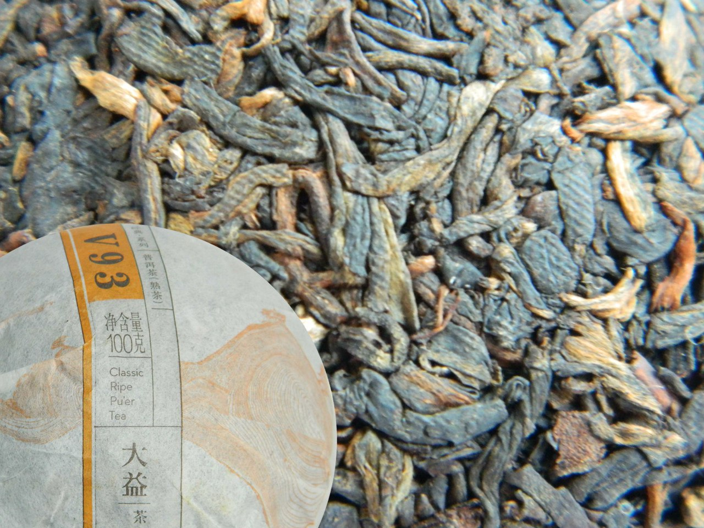
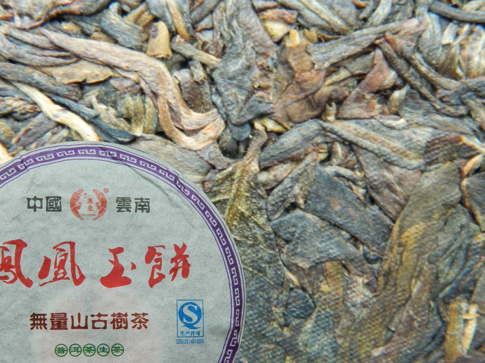
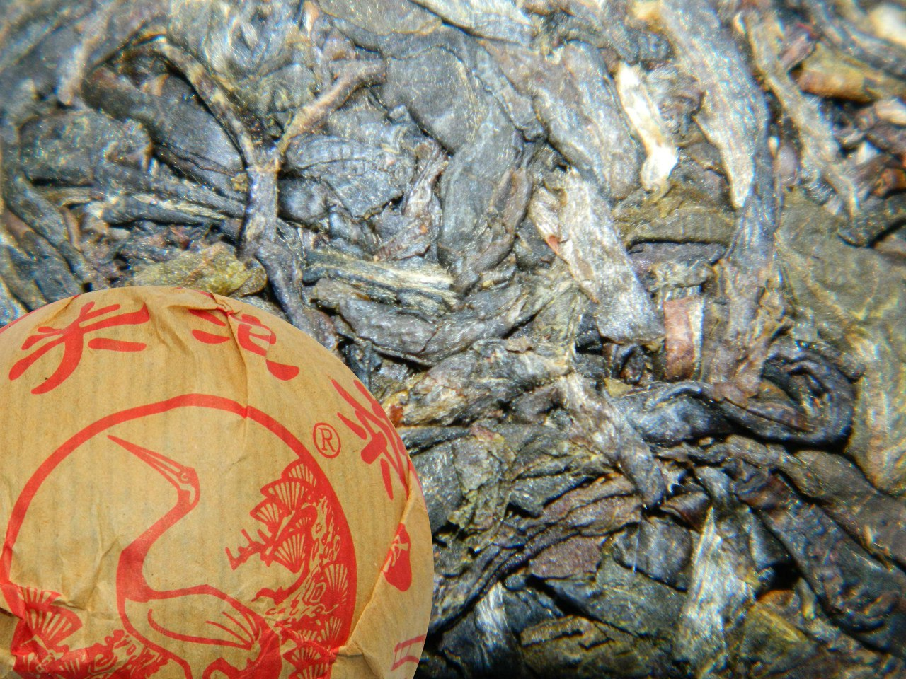
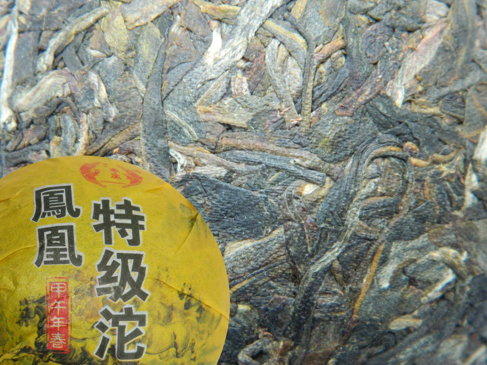
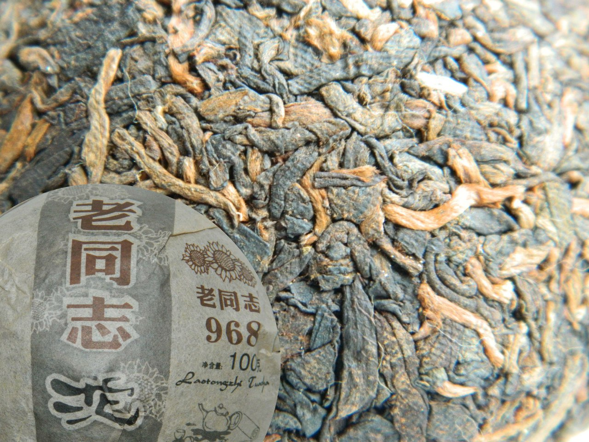
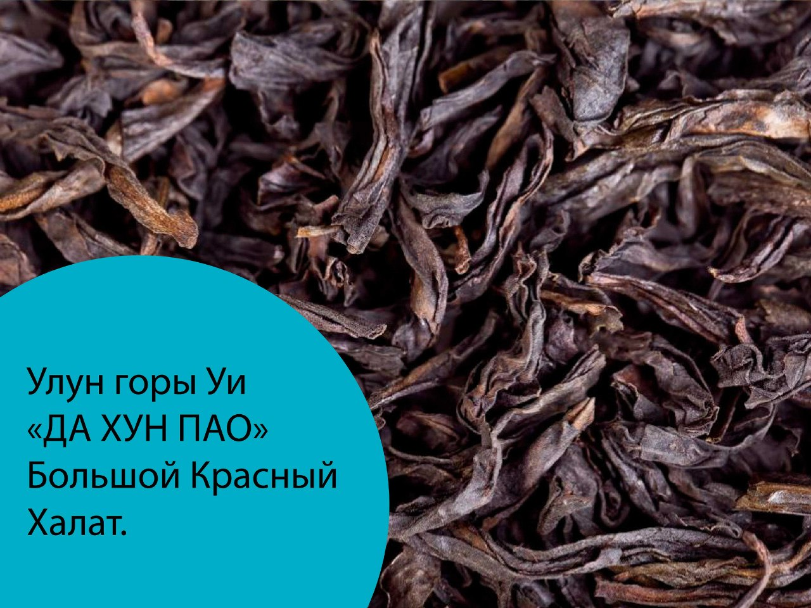
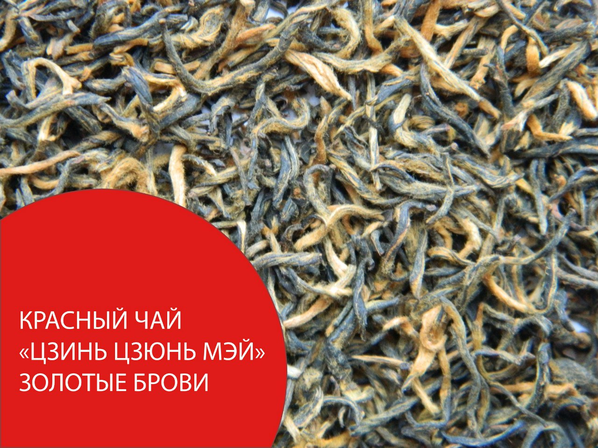

Шу пуэр V93, партия 1501 Да И, Менхайская чайная фабрика, Юннань, 100 г, 2015 (№6).
V93 – или попросту «вэшка». Удачный и популярный шу пуэр от «Да И» первый сбор чайного листа 2015 года. Классическая классика. Бархатистый обволакивающий вкус с нотами дерева и светлого табака и сухофруктов. Чай бодрит и тонизирует, проясняет голову. Концентрирует внимание, позволяет собраться, сосредоточится. Подвигает к активной осознанной деятельности.
Как заваривать:
Вода 95ºС, 6 г на 100 мл, прекрасно заваривается до 8 проливов (больше не пробовал).
Промо цена 100г: 800p.
Шен Пуэр со старых деревьев горы Ву Лианг, Феникс Нан Жанг, Юннань, 100 г, 2012 год (№4)
Шен пуэр 2012 года, малоизвестного производителя Фенгуанг Нан жанг из Юннаня. Гора Ву Лианг, откуда географически происходит чай, не входит в число шести великих гор Юннаня, однако его стоит попробовать. Вкус гармоничный, обволакивающий, без горечи и терпкости, присущей молодым шен пуэрам. Трудно выделить какую-либо доминирующую ноту. По мере проливов во вкусе проявляются легкие грибные оттенки, древесина, грецкий орех и смородина. Чай освежает и тонизирует, проясняет голову, помогает сконцентрироваться.
Как заваривать:
Вода 95ºС, 6 г на 100 мл, прекрасно заваривается до 12 проливов.
Промо цена 100г: 1050p.
Шен пуэр, Цапля и сосна, Сягуанская чайная фабрика, 100 г, 2014 год (№2).
«Сягуан туоча» молодой и дикий шен пуэр. Сягуанская фабрика специализируется именно на шен пуэрах и делает их хорошо. Классический яркий вкус, проверенная технология. Пробовать шены надо именно с «Цапли». Во вкусе ощутима небольшая терпкость, запах осенних листьев, леса, костра, легкие грибные оттенки. Чай освежает и бодрит, проясняет голову.
Как заваривать:
вода 90-95ºС, 5-6 г на 100 мл, прекрасно заваривается до 12 проливов.
Промо цена 100г: 800p.
Шен пуэр , Феникс округа Нан Жанг, Юннань, 100 г , 2014 год (№3).
Приятный шен пуэр. Любители оценят. Вкус яркий, бодрящий, с характерными ноткам весенней зелени и черной смородины. Прессовка очень плотная. Много чайных почек.
Как заваривать:
Вода 95ºС, 6 г на 100 мл, прекрасно заваривается до 10 проливов.
Цена 100г: 1000p.
Шу пуэр Старый товарищ №0968, Лао Тон Чжи, Хайваньская чайная фабрика, Юннань, 100 г, 2010 (№9)
Прекрасный чай с чистым прозрачным вкусом. Он чем-то похож на уишанские улуны. Во вкусе преобладают древесные ноты, аромат нагретой сосны, хвои. Сам чай удивительно гармоничен, ярок и свеж. В нём есть и крепость, и лёгкость, и сладость.
Вода 95ºС, 6 г на 100 мл, прекрасно заваривается до 8 проливов.
Промо цена 100г: 1000p.
Улун "Да Хун Пао" в переводе "Большой красный халат".
«Да Хун Пао» - хорошо известный любителям чая утёсный улун. Каждый год он разный. Это зависит от погоды, производителя и особенностей купажа. Чай в текущей поставке обладает ясным кристальным вкусом. Дает настой яркого янтарного цвета. Во вкусе сочетаются ноты карамели, жженого сахара, сухофруктов и шоколада. В горячей сухой чашке чувствуется аромат цветов и ванили. Чай легко тонизирует, успокаивает, умиротворяет.
Как заваривать:
Вода 95ºС, 6 г на 100 мл, прекрасно заваривается до 6 проливов.
Промо цена 100г: 600p.
Цзинь Цзюн Мэй, «Золотые брови» (№1).
Черный (в Китае его называют красным) чай высшего качества, собранный весной в Уи Шане. Для его производства используются только почки и самые нежные листочки. В процессе обработки почки приобретают золотистый цвет. Откуда и название. Во вкусе сочетаются ноты сладких фруктов, манго, мёда, сушеных ягод и цветов, аромат клубничного варенья и свежей хлебной корочки. Чай освежает и тонизирует, проясняет голову. Снимает депрессию - разгоняет тоску.
Как заваривать:
Вода 90-95ºС, 6 г на 100 мл, прекрасно заваривается до 5-6 проливов.
Промо цена 100г: 900p.